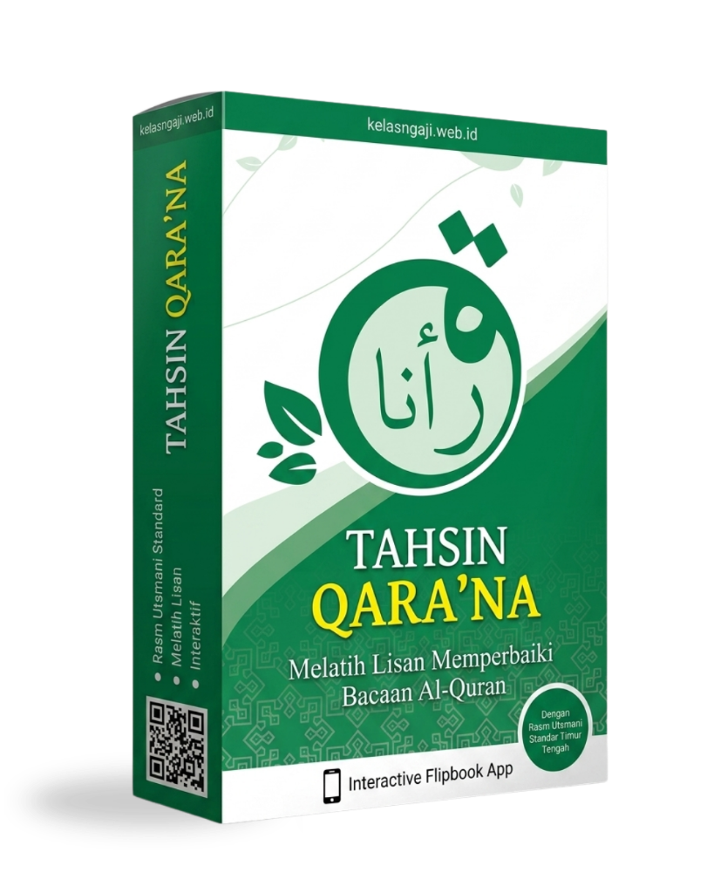

بِسْمِ اللَّهِ الرَّحْمَٰنِ الرَّحِيمِ
Melatih lisan memperbaiki bacaan Al-Qur'an secara interaktif (*Interactive Flipbook App*). Dilengkapi audio suara asli ustadz dengan standar Rasm Utsmani Timur Tengah.
Isi form di bawah ini, link aplikasi akan langsung dikirim ke WhatsApp Anda:

Dilafalkan langsung oleh ustadz kompeten dengan makharijul huruf yang fasih dan presisi, bukan suara sintetis robot/AI.
Membaca modul digital dengan sensasi membalik lembaran buku fisik yang interaktif, bisa diklik untuk mendengarkan suara contoh.
Kurikulum bertahap: pengenalan huruf hijaiyah tunggal, tanda baca harakat, sambung kata, hukum mad, hingga tajwid lanjutan.
Format tulisan huruf standar internasional Mushaf Madinah, membuat Anda langsung terbiasa membaca mushaf asli di kemudian hari.
Cocok untuk Anda yang memiliki keterbatasan waktu atau malu belajar tatap muka. Bisa diulang-ulang sesuka hati di rumah.
Sebagai wujud dakwah membumikan Al-Qur'an, aplikasi dan materi ini dibagikan tanpa pungutan biaya sepeser pun.
Alhamdulillah, lebih dari 1.850 sahabat telah mengunduh aplikasi Tahsin Qara'na ini. Berikut pesan dan motivasi belajar dari mereka:
Muhammad Raihan (Bandung)
Aplikasi Tahsin Qara'na • Baru saja